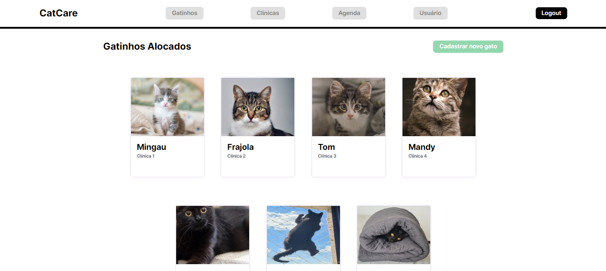

Projeto: Crazy Cat
Para este projeto, nos deparamos com os problemas propostos pela
ONG Crazy Cat Gang. Escolhemos duas soluções e desenvolvemos uma ferramenta administrativa
para os auxiliadores do projeto puderem trabalhar de forma agilizada em relação aos gatinhos.
Detalhes Técnicos:
Com as ferramentas HTML5 e CSS3 criamos toda a implementação do site
já preparando o terreno para no futuro implementar banco de dados e JS.
[VOLTAR]